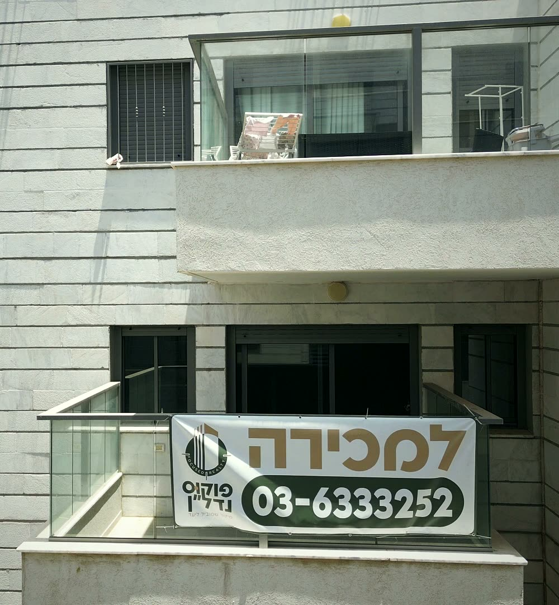
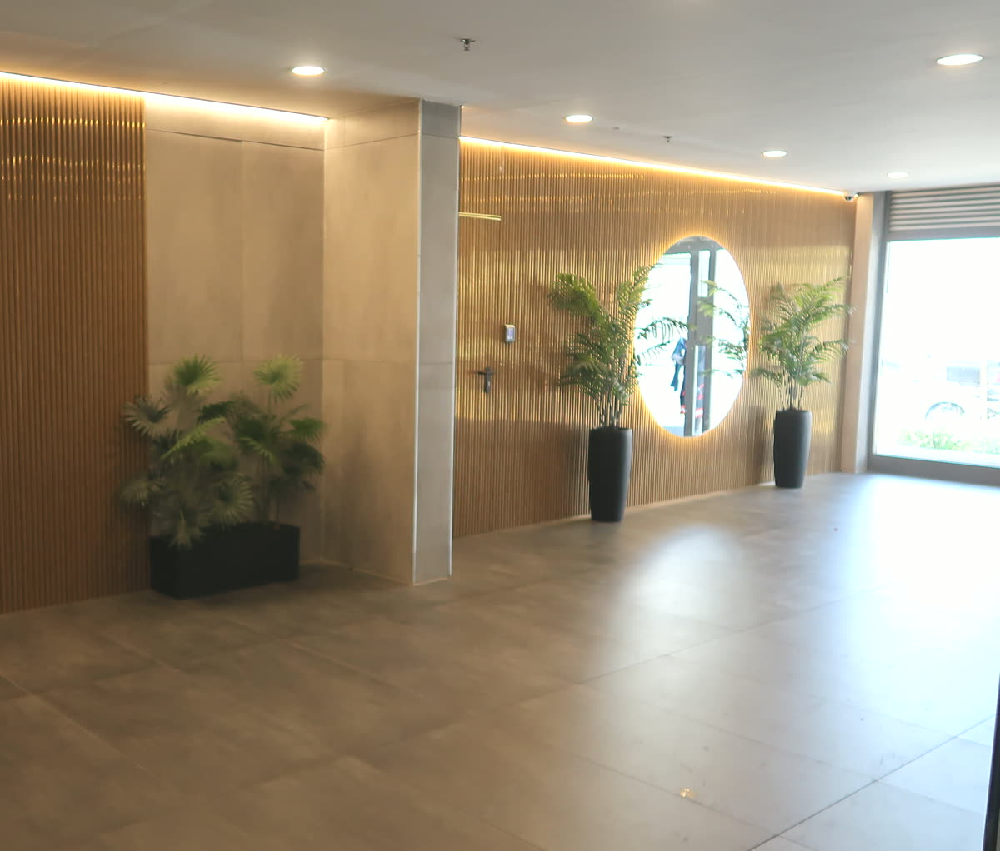
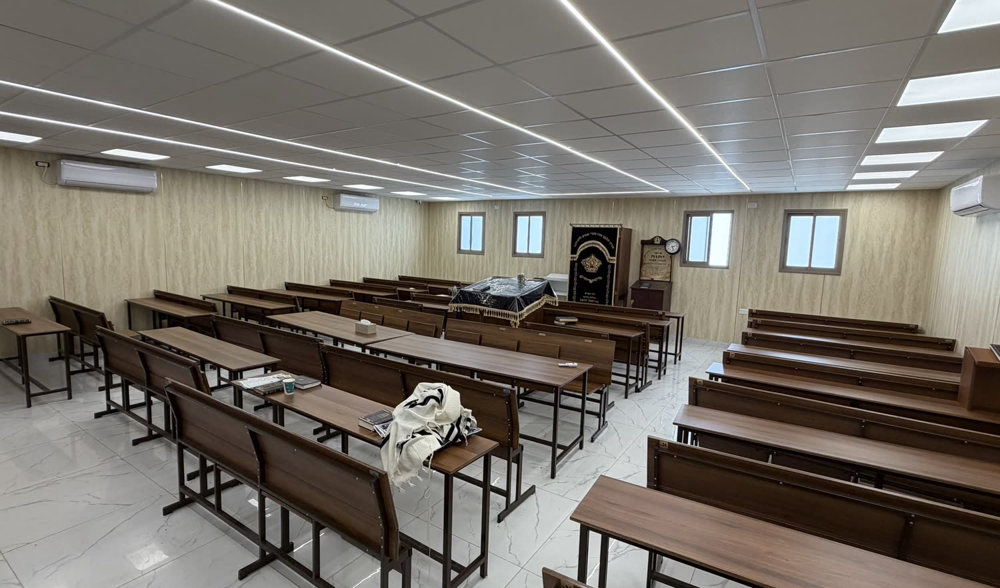

Complejo Sofrim
La nueva joya de Bnei Brak: un barrio joven a orillas del río Yarkón, con un gran paseo fluvial, otra forma de vivir y un potencial que no ha hecho más que empezar.
90 segundos en el complejo
Un recorrido breve por el barrio, las viviendas y todo lo que hace de esto una oportunidad.
El vídeo dura 90 segundos. Descargar en calidad máxima · 1080p

El Complejo Sofrim es Focused Realty
No somos una agencia más. En Focused Realty vivimos el Complejo Sofrim: cada edificio, cada planta, cada oportunidad. El lugar donde todo encaja.
Seis razones de peso
El futuro ya se está construyendo aquí
El Complejo Sofrim es el proyecto más innovador de Bnei Brak: un barrio entero que se levanta desde cero, con un nivel que la ciudad nunca había visto. Quien entra hoy, entra en el minuto uno.
Cerca de los polos empresariales, lejos del ruido
A pocos minutos de la Bolsa de Diamantes de Ramat Gan, de las torres de oficinas B.S.R y del distrito tecnológico de Petah Tikva. Y, aun así, con la tranquilidad de un barrio residencial.
A orillas del río Yarkón
Un gran paseo fluvial junto al barrio, un amplio parque en fase muy avanzada de ejecución y vistas abiertas sobre zona verde. Primera línea de naturaleza, en pleno Gran Tel Aviv.
Comunidad, club deportivo y casas de estudio
Comunidades sólidas que ya han echado raíces, sinagogas y casas de estudio dentro del propio complejo, y un club deportivo de barrio en proyecto. Una vida completa, a un paso de casa.
Se nota nada más entrar
Un recibimiento a otro nivel, calidades muy cuidadas y un trastero para cada vivienda. Esta es la Bnei Brak innovadora: aquí se construye de otra manera.
Pague menos. Consiga más.
Precios de entrada atractivos frente a todo lo que hay alrededor, y un potencial de revalorización que se amplía con cada fase de desarrollo del complejo.

Qué hay disponible
Pisos de 2, 3 y 4 dormitorios
Un amplio abanico, para inversores y para familias.
Bajos con jardín
Planta baja con jardín privado de uso exclusivo.
Áticos
Las viviendas más exclusivas de cada edificio, en la última planta.
Un trastero para cada vivienda
Trastero en propiedad, incluido con la vivienda.
El barrio, tal y como es







Infórmese y concierte una visita
Le enseñamos lo que hay disponible ahora y le buscamos la vivienda que encaje con lo que necesita.
Llamar+972 3-633-3252